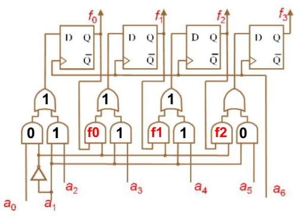

Järjendloogika

- Küsitud on väljundeid tsükli lõpus – see tähendab, et peame tsükli läbi tegema signaalide (a-de) viimase numbriga ehk viimase biti väärtusega, sest väljundid muutuvad iga tsükli läbitegemise lõpus. Ehk peame skeemi läbi tegema, kui a0 = 0, a1 = 1, a2 = 1, a3 = 1, a4 = 1, a5 = 0, a6 = 1
- Alustame skeemi alt. Väärtused liiguvad mööda juhtmeid edasi. Mummu tähendab väärtuse vastupidiseks muutmist pärast mingit operatsiooni ehk tehet bittidega. Kui aga tehet teha ei taheta, vaid tahetakse lihtsalt väärtust vastupidiseks muuta, kirjutatakse mummu ette kolmnurk. Ümara tipuga “kolmnurkne” kujund tähendab AND operatsiooni ehk mõlemad väärtused peavad olema “tõesed” ehk ühed. AND operatsioonist võib mõelda ka kui korrutustehtest: 0*0 = 0, 0*1 = 0, 1*0 = 0, 1*1 = 1. Terava tipuga kolmnurkne kujund tähistab OR operatsiooni ehk vähemalt üks väärtustest peab olema “tõene” ehk 1. Ka mõlemad võivad olla ühed. Täidame kujundid vastavalt sellele ära.
PS! F0 ega f1 ei ole tegelikult teise ja kolmanda OR-i väljundi leidmiseks vajalikud, kuigi need on nende sisendid, sest teine OR-i sisend on juba 1 ning vastus seega kindlalt 1. Viimase puhul me aga veel OR-i väljundit ei tea.

- Oleme ära täitnud nii palju kui võimalik ilma väljundeid (f-id) välja arvutamata. Väljundi arvutamiseks vaatame trigeri tüüpi (meie skeemil D), taktsagedust (tähis tühi kolmnurk, mitte segamini ajada väärtuse pööramisega) ja sisendit.
- Arvutame esimese väljundi f0: meil on D-triger, seega eelmine väärtus ei loe(????). Taktsignaal on a6, mis on parasjagu 1 – see tähendab, et eelmise tehte väärtus muutub uue tehte väärtuseks (kui oleks 0, siis peaks arvutama eelmiste tehete väljundi ja see oleks ka uue tehte väljundiks). Sisend tuleb OR-ist ja on 1, seega on ka väljund üks. Nagu ka teada, siis D-triger on data-triger ehk “salvestab” lihtsalt väärtuse, mis tema sisendiks on.
- Kordame sama ülejäänud väljunditega. Saame, et f2 on 0 ning oleme selle abil nüüd leidnud ka viimase OR-i tulemuse, mis on 0. Leiame selle abil f3 väljundi.
- YAYY!! Meil on väljundid ja seega vastus käes!

Vihjetega ülesanne
Vihje 1
dropdowni sisu
Vihje 2
dropdowni sisu
Vihje 3
dropdowni sisu
Vihje 4
dropdowni sisu
Vihje 5
dropdowni sisu
vastuse kastike js-ga?